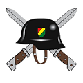
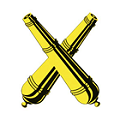
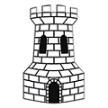
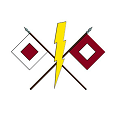
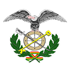

Infanteria 
Es el Arma basica del Ejercito , esta organizada euipada e instruida para establecer contacto entrar en combate y aniquilar al enemigo , mediante el fuego , el movimiento y la accion de choque. Es el Arma imprescindible para conquistar y mantener el terreno.
Caballeria
Es el Arma organizada, equipada e instruida para establecer contacto con el enemigo , realizar reconocimientos en profundidad y proporcionar seguridad a las propias fuerzas , aprovechando su movilidad y maniobrabilidad.
Artilleria 
Es el Arma organizada , equipada e instruida ,táctica y técnicamente para conducir potentes masas de fuego sobre grandes espacios , tanto en frente como en profundidad del campo de batalla.
Ingenieria 
Es el Arma organizada, equipada e instruida , tactica y tecnicamente , para proporcionar apoyo de combate y servicio tecnico a las demas armas , mediante la ejecucion de trabajo de movilidad , contra movilidad y supervivencia , tendientes a facilitar las operaciones . Brinda apoyo en tiempo de paz y en tiempo de guerra.
Comunicaciones 
Es el Arma organizada , equipada e instruida para proporcionar apoyo del combate y servicio tecnico a las otras armas mediante: la instalacion , operacion y mantenimiento del sistemas de comunicacion , permitiendo el comando y control en las operaciones.
Logistica 
Es el Arma organizada , euipada e instruida, para proporcionar apoyo logistico en las areas de abastecimiento , evacuacion , transporte , mantenimiento y asesoramiento de las unidades , en las diferentes operaciones.